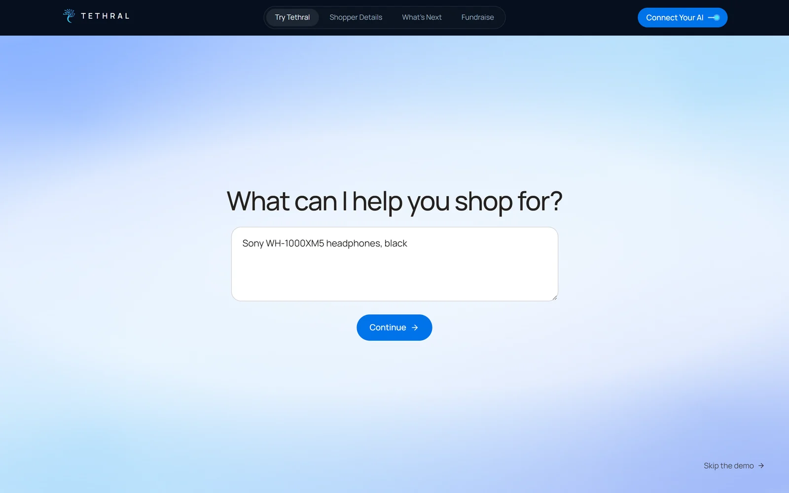
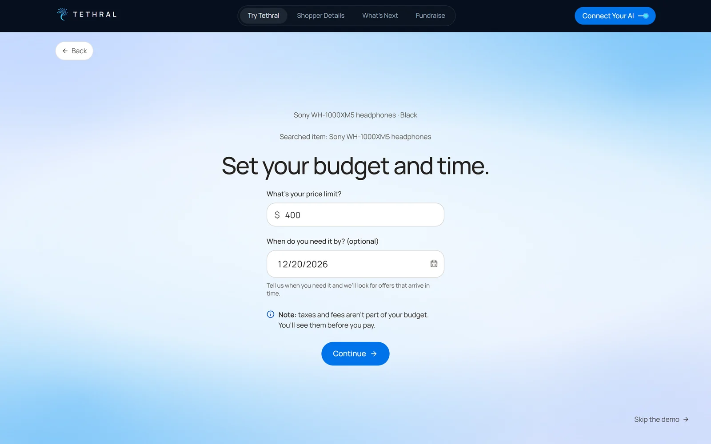
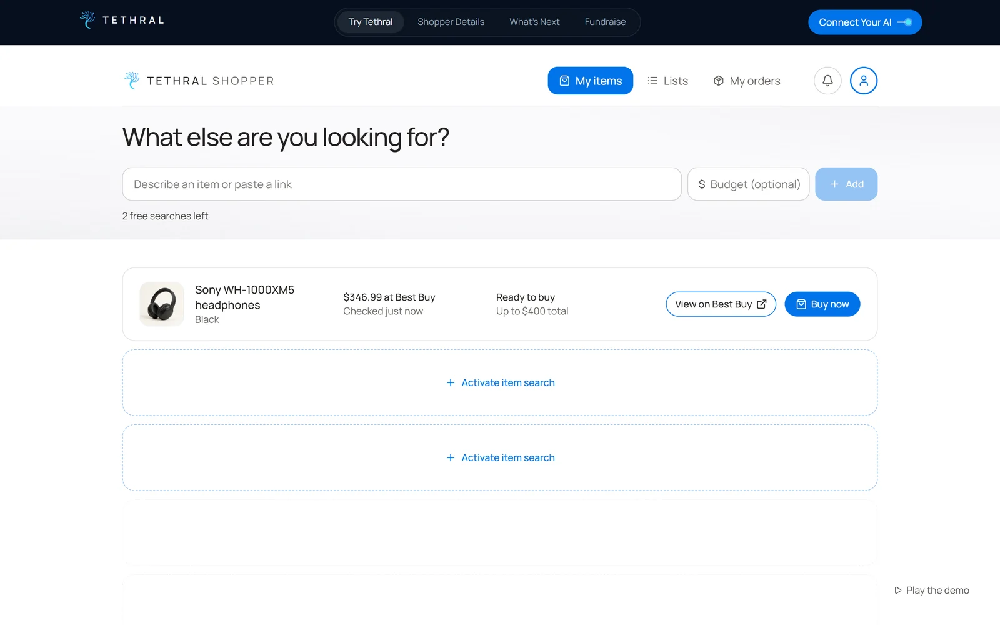
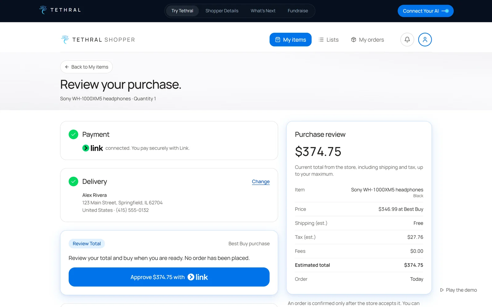
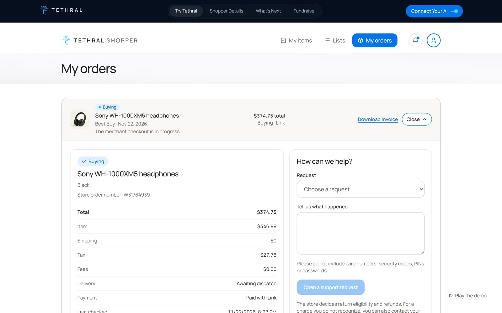

Tethral Shopper demo
Tethral Shopper is an AI shopping agent that runs through an MCP, so people can use it from the Tethral site or from the AI they already use, like Claude or ChatGPT. You add a product, give it a budget, and the agent finds where it is sold and for how much.

The challenge
Tethral Shopper is an agent that shops online for you. It works through an MCP, so you can connect from the Tethral site or from Claude, ChatGPT and other assistants. You add a product to your search and assign it a budget. The agent checks which stores have it and at what price, and suggests the best options. You can buy right away, in the app or at the store's own site, or ask it to keep watching and email you when the price drops to your budget. The promise: find it now, buy it when the time is right.
The goal is that people stop spending so much time searching for products. Instead, the agent tells them the best place and the best moment to buy.
The demo had a business job too. It supports the client's goals of securing investment or a first commercial deal and getting 100 users registered, and it has to convince three audiences in one visit: a shopper who has never heard of agentic commerce, an investor deciding whether the idea is real, and a technical early adopter who wants to plug Tethral into the AI they already use.
An invisible product
Tethral's value happens while you are away. A normal AI chat ends when you close it and the request is gone; a Tethral request keeps running for days or weeks. And it asks people to trust an AI with something they are used to doing themselves: deciding when to buy, and sometimes paying.
Make waiting and trust visible
A 60-second demo where most design decisions are about showing time passing and putting the user in control of the money: how long the agent keeps watching, and exactly what it is allowed to do when it finds a match.
Designing for trust
Showing the passage of time. A comparison module puts a normal AI chat ("Chat closed. Request gone.") next to Tethral ("Still watching") on the same 30-day price line. The target is $289, the price starts at $349 on day 0, and Tethral buys at $279 when it drops below the target. Labels like "Illustrative prices" keep it honest. The whole argument fits in one chart: your request keeps going after the chat ends.
Autonomy as a choice, not a risk. Handing over a payment method is the biggest barrier, so instead of one setting the user picks a level: Buy automatically, Ask me first, or Notify me. Each is written in plain language, with "You can change this at any time."
Stopping is a real flow. "Stop automatic buying?" is followed by reassurance, "You'll keep getting price alerts" and "No charges added", so leaving never feels like losing control.
A conversation, not a form. One question per screen, one input and one Continue button, so the user always knows the next step.
The demo flow

1. Say what you want
The demo opens with a single question. Plain language is enough; the agent turns it into a product, a color and a category.

2. Set your budget and time
A price limit and an optional date. A short note explains that taxes and fees are not part of the budget and will be shown before paying, so the total is never a surprise.
3. How about I buy them for you?
After a quick good-news beat, the agent shows offers from several stores with price and delivery, marks the lowest one and offers to buy it. If nothing fits the limit, it says so and offers to keep an eye on it and email you when a price does.

4. My items
Everything the agent is watching lives in one list: price, store, when it was last checked and whether it is ready to buy. Free searches left are visible, and a login gate asks for an account only when you decide to buy.

5. Review your purchase
Payment through Link and a delivery address, each confirmed step by step. The purchase review shows the real total with shipping, tax and fees before you approve, and the copy is clear that no order exists until you do.

6. My orders
After approving, the order shows its status, the full breakdown and a downloadable invoice. A help panel lets you ask where the order is, request a return, change the address or report a problem.
Realism built for trust
A demo about trusting an AI with money can't look fake, but it also can't imply that money is moving. The latest rounds worked on both sides:
Real-looking data. Product photos that match what was typed, real store logos, realistic prices and US formats for an American audience.
Honest at the anxious moments. A "This is a demo. The information shown is not real" screen before the flow, with Skip the demo, and "Demo only. Nothing is charged." right at payment and approval.
No dead ends. If nothing matches the budget, the assistant doesn't fail: it offers to keep looking and tell you when a price fits.
Visible progress. Statuses move from Checking stores to Your price found, and every purchase lands in My orders with a receipt.
Iterations & outcome
The demo went through several rounds in a short window, from the first flow to client feedback on the search step, verdict and alerts, a mobile pass on inputs and notices, the purchase review, and the latest round on orders and invoices. The result is a clickable demo on the public site that lets shoppers, investors and early adopters understand and trust the agent before they connect it, in support of the client's investment and user-registration goals.